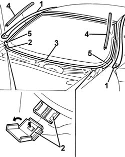
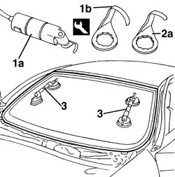
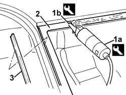
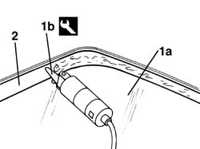
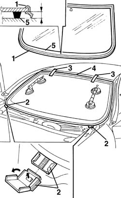
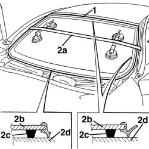

7035A14 (Bonded type) windscreen GLASS - R.R. - Includes. cleaning edges of glass and housing in bodyshell
- Path
- Procedures > 70 FITTINGS > 7035 BODYSHELL WINDOWS > 7035A windscreen > 7035A14 (Bonded type) windscreen GLASS - R.R. - Includes. cleaning edges of glass and housing in bodyshell
- Kind
- repair procedure (removal / refitting; the operation number is the code)
- Applies to
- all engines; all production periods
- Interactive page
- https://sloeber94.github.io/elrnDB-a156/en/#/3238774
Applies to: all engines; all production periods
 Removing
Removing
 Refitting
Refitting7065C68 rear view mirror - r+r
5050B34 windscreen wiper arm/s complete with blade - r+r
7055A18 Windscreen base TRIM - R.R.
Protect the facia and wings using covers.
1. Remove the rain gutters in the area of the front pillars.
2. Remove the windscreen supports.
3. Remove the perimetral seal of the windscreen.
4. Remove the windscreen side seals.
5. Apply adhesive tape to protect the edges of the bodywork in the areas illustrated.

Applies to: all engines; all production periods
1. Use a vibrating knife (1a) and blade (1b) to cut the sealant along the bottom of the windscreen.
Work from the outside of the vehicle.
 | Name | Country |
|---|---|---|
1a | Vibrating knife | 1.823.011.000 |
| Name | Country |
|---|---|---|
1b | Blade | 1.823.019.000 |
2. Fit the blade (2a) and cut the sealant on the other sides of the windscreen.
Work from the outside of the vehicle.
| Name | Country |
|---|---|---|
2a | Blade | 1.823.022.000 |
3. Fit the suction handles to the windscreen and, with the assistance of a second operator, remove the windscreen and rest it on a supporting stand.

Applies to: all engines; all production periods
Refitting
Removing1. Using the vibrating knife (1a) and blade (1b), cut and level the sealant in the windscreen housing leaving a thickness of between 0.25 and 1 mm without scratching the paint. The sealant left in the frame will act as a backing for the new bond.
| Name | Country |
|---|---|---|
1a | Vibrating knife | 1.823.011.000 |
| Name | Country |
|---|---|---|
1b | Blade | 1.823.010.000 |
2. Clean the windscreen seating carefully with compressed air and degrease thoroughly using heptane.
Touch up the paintwork if necessary.
3. Refit the side seals on both sides of the windscreen.

Applies to: all engines; all production periods
1. Work on the windscreen (1a) with the vibrating knife and blade (1b).
| Name | Country |
|---|---|---|
1b | Blade | 1.823.010.000 |
Cut and level the sealant to reduce its thickness to a minimum. It is not necessary to remove the residual sealant completely; take care not to damage the black printing on the perimeter of the window.
2. Carefullly clean the printed area around the edge of the window with compressed air and thoroughly degrease with heptane.
Check that the window is undamaged.

Applies to: all engines; all production periods
1. Fit the seal around the perimeter of the windscreen. Use a new seal.
2. Test fit the windscreen and centre it perfectly, using the supports.
3. After centering the windscreen, mark the position of the windscreen and the housing with strips of adhesive tape.
4. Cut the strips of adhesive tape and remove the windscreen.
5. Use an air gun to extrude a bead of sealant as evenly as possible along the perimeter of the windscreen.
Begin applying the sealant from the middle of the lower edge and continue without breaks around the entire edge of the window.

Applies to: all engines; all production periods
1. With the assistance of a second operator, fit the windscreen in its seating immediately after applying the sealant and bed it in place.
2. Fit the belt (2a) as shown in the figure and tension it so as to apply even pressure over the entire windscreen, in order to ensure a correct match between windscreen (2b), sealant (2c) and windscreen frame (2d).

Applies to: all engines; all production periods
Before refitting the car's exterior elements, check that there are no penetration points.
Apply soapy water using a sponge along the outside perimeter and blow through with compressed air from the inside to identify any penetration.
Fit the perimeter seal.
Fit the rain gutters in the area of the front pillars.
7055A18 Windscreen base TRIM - R.R.
Topics linked from this page (4)
- 5050B34 windscreen wiper arm/s complete with blade - r+r
- 7025A14 Bonnet LID - R.R.
- 7055A18 Windscreen base TRIM - R.R.
- 7065C68 rear view mirror - r+r